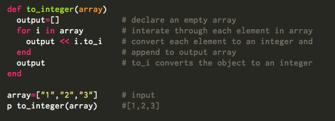
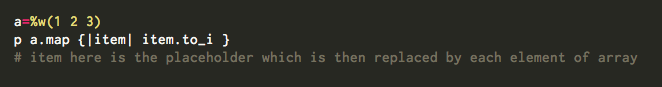
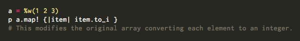

Enumerable is actually a module which consists of a bunch of methods packaged together that can get mixed in with other classes like Array and Hash. It includes various types of methods to iterate over different types of objects in Ruby. It includes methods to traverse, search, sort and manipulate collections.
Ruby Enumerable#map

Enumerable map method takes an enumerable object and a block, iterates the block for each element and outputs each returned value from the block. The original object remains unchanged unless you use the Enumerable#map! method
Enumerable#map is a non destructive method that returns a new array
Enumerabl#map! is a destructive method that mutates the original array.
If the object is an array then,
array.map {|item| block } -> new_array
array.map! {|item| block } -> modified original array
Lets start of with an example illustrating the usage of Enumerable#map method
Given an array of strings, we convert it to an array of numbers.
- Input is an array of strings which are numbers. array=["1","2","3"]
- Output is an array of numbers. array=[1,2,3]
First approach: Without the use of Enumerable#map method

As you can see, we have used for loop to iterate through all the elements of the array
and append the result to output array. The same logic can be implemented in a more simplified approach using the Enumerable#map method.
Second simplified approach : Using the Enumerable#map method
Enumerable map method returns a new array with the results of iterating the block once converting each item in array to an integer
a=%w(1 2 3) is same as a=["1","2","3"] which is just an another way of declaring array of strings

Enumerable#map!
Enumerable#map! method iterates the block once for each element of self replacing the element with the value returned by the block.

Use of enumerable modules allow us to make the code clean, clear and concise avoiding multiple lines of code to perform the same operation.
References
- http://www.ruby-doc.org/core-2.1.2/Array.html#method-i-map
- http://ruby.about.com/od/rubysbasicfeatures/ss/Mapping-Arrays.html
- http://apidock.com/ruby/v1_9_3_392/Enumerable/map